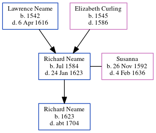

Richard Neame 1584 - 1623
[ Home ] | [ Calendar ] | [ Surnames Index ] | [ Errors ] | [ Family History ]The child of Lawrence Neame and Elizabeth Curling, Richard Neame, the 10 times great-grandfather of Nigel Horne, was born in Woodnesborough, Kent, England in Jul 1584 and married Susanna (with whom he had 1 child, Richard) in Woodnesborough on 11 Nov 16161.
He died on 24 Jan 1623 in Woodnesborough and was buried on 2 Feb 1623.
Parents
- Lawrence was born in 1542
- Elizabeth was born in 1545
Children
- Richard was born in 1623
Citations
- Kent, England, Tyler Index to Parish Registers, 1538-1874 Online publication - Provo, UT, USA: Ancestry.com Operations, Inc., 2010. This collection was indexed by Ancestry World Archives Project contributors.Original data - Frank Watt Tyler. The Tyler Collection. Canterbury, Kent, England: The Institute of Herald
Family Tree
Map
Generated by ged2site. Last updated on Jul 3, 2024
Known Issues
Check out freepages.rootsweb.com
Birth date (Jul 1584) has no citations
Death date (24 Jan 1623) has no citations
Burial date (2 Feb 1623) has no citations